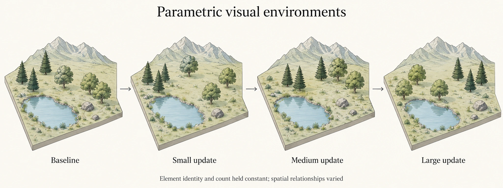

RESEARCH DIRECTION · PROPOSED STUDY, 2027–2028
Environmental Novelty and Sustained Attention
Adaptive visual environments for long-duration polar habitation.

Research question
As people repeatedly experience the same environment, it becomes familiar. This research asks how much visual change is perceived as new, how that perception develops over time, and how it relates to sustained attention in long-duration polar habitats.
Three connected priorities
- Environmental change and perception. Relate controlled changes in natural visual scenes to perceived novelty and familiarity.
- Attention during repeated exposure. Combine immersive experiments with behavioural tasks, eye tracking and physiological measures to examine attention over time.
- Adaptive environmental design. Translate human-response evidence into guidance on when and how visual environments might be updated.
Research foundation and next steps
The study builds on my work in landscape visual quality, emotional responses and stress recovery, alongside current contributions to polar human-factor research, including evidence synthesis, measurement-tool development and experimental planning.
The proposed work will examine supportive ranges of novelty and their implications for adaptive visual design. These are research aims; findings and design thresholds have not yet been established.
Explore related publications